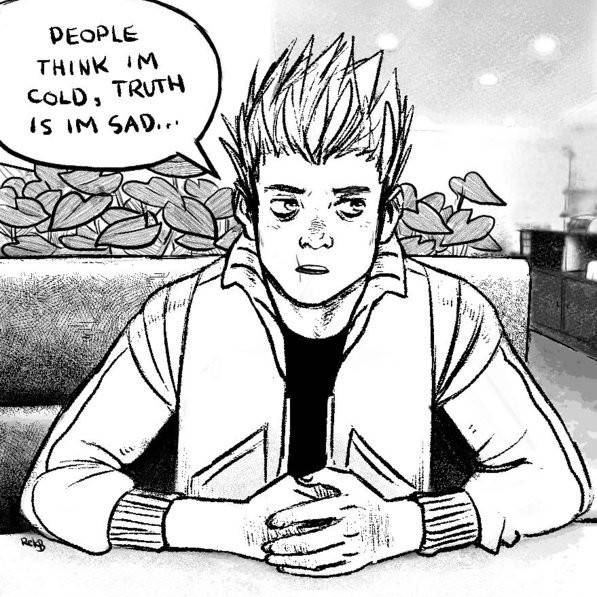
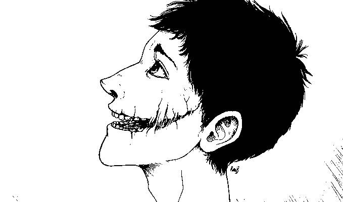

About
About Projects
Projects Books
Books Games
Games Stories
Stories Store
Store Collection
Collection Notes
NotesDepressive realism
Depressed individuals are thought to have a negative cognitive bias that results in recurrent, negative automatic thoughts, maladaptive behaviors, and dysfunctional world beliefs. Depressive realism argues not only that this negativity may reflect a more accurate appraisal of the world but also that non-depressed individuals' appraisals are positively biased.
Modern psychology recognises everyday thinking as largely biased, based on a number of distortions. But this recognition exists within the framework of positivity. In short, the mainstream embraces commonplace illusions as healthy as long as they don’t disrupt the positive flow.
Positive illusions are common cognitive biases based on unrealistically favourable ideas about ourselves, others, our situation and the world around us. Types of positive illusions include, among others, unrealistic optimism, the illusion of control, and illusory superiority that makes us overestimate our abilities and qualities in relation to others.
Universal defence mechanisms humankind has developed:
- Isolation, including repression of disturbing and destructive thoughts and feelings.
- Anchoring, the establishment of higher meanings and ideals. The examples of collective anchoring he gives are: ‘God, the Church, the State, morality, fate, the law of life, the people, the future’. Anchoring provides us with illusions that secure psychological comfort. The shortcoming of anchoring is the despair we feel upon discovering that our anchoring mechanism is an illusion.
- Distraction, the focusing of our thoughts and energy on a certain idea or task to prevent the mind from self-reflection.
- Sublimation, a type of defence mechanism in which negative urges are transformed into more positive actions. For instance, we distance ourselves from the tragedy of our existence and transform our awareness into philosophy, literature and art.
- Judgment of contingency in depressed and nondepressed students: sadder but wiser?, Alloy LB, Abramson LY. J Exp Psychol Gen. 1979 Dec;108(4):441-85.